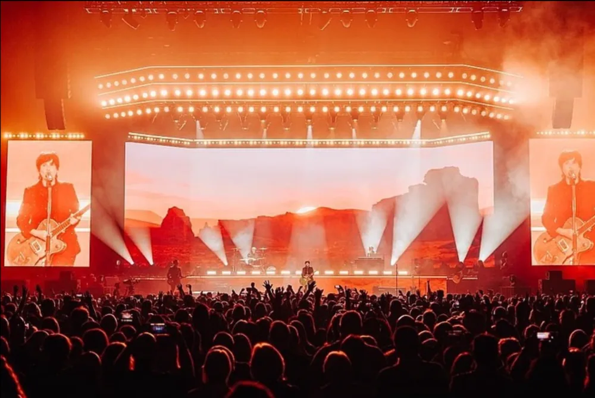
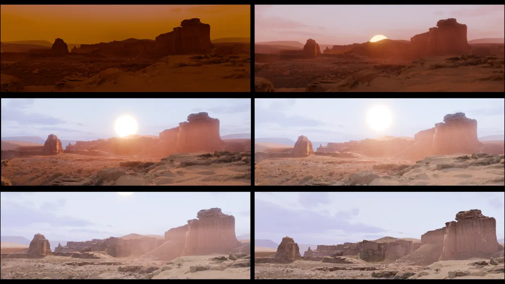
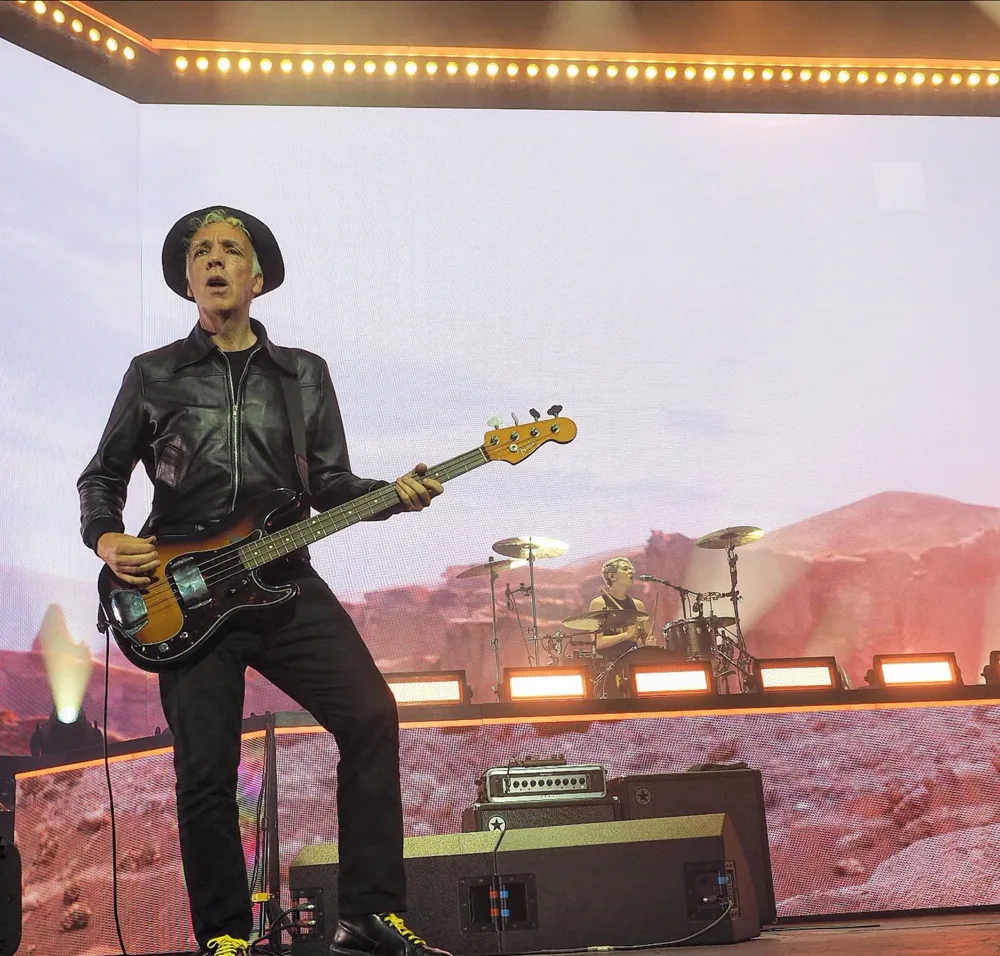
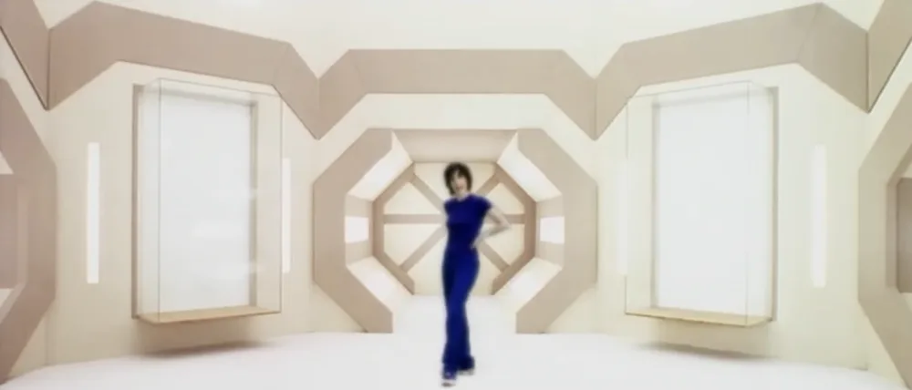
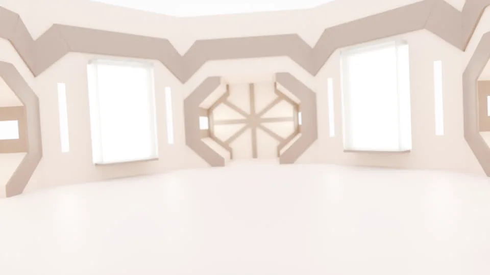

Live events
Texas — The Very Best Tour
Two 3D environments for the band's screens: a desert sunrise to open the show, and a replica of a music video set built to hold holograms of the band.

Opening sunrise
A 3D landscape inspired by an opening shot from Paris, Texas, the film the band is named after. The aim was an atmospheric sunrise to play behind the opening track, “I Don't Want a Lover”.


“Say What You Want” set
A 3D replica of the set from the “Say What You Want” music video, built as a space to place holograms made from live footage of the band.

